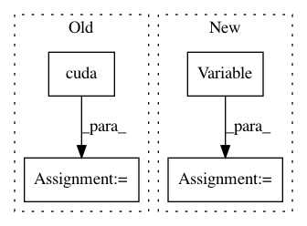

eab5e7909d647e363002b529e9d39911f4a2b028,train2.py,,train,#,36
Before Change
train_bar = tqdm(train_loader)
for data in train_bar:
hr_imgs, _ = data
lr_imgs = Variable(torch.stack([train_lr_transform(img) for img in hr_imgs], 0)).cuda()
hr_imgs = Variable(hr_imgs).cuda()
gen_hr_imgs = g(lr_imgs)
// update d
After Change
train_bar = tqdm(train_loader)
for hr_imgs, lr_imgs in train_bar:
hr_imgs = Variable(hr_imgs).cuda()
lr_imgs = Variable(lr_imgs).cuda()
gen_hr_imgs = g(lr_imgs)
// update d
d.zero_grad()
In pattern: SUPERPATTERN
Frequency: 3
Non-data size: 4
Instances
Project Name: leftthomas/SRGAN
Commit Name: eab5e7909d647e363002b529e9d39911f4a2b028
Time: 2017-12-01
Author: leftthomas@qq.com
File Name: train2.py
Class Name:
Method Name: train
Project Name: richzhang/PerceptualSimilarity
Commit Name: 7b34113cc3b5529a127bd02667de9de0b5b75df9
Time: 2019-07-26
Author: rich.zhang@eecs.berkeley.edu
File Name: models/__init__.py
Class Name: PerceptualLoss
Method Name: forward
Project Name: keon/seq2seq
Commit Name: af79a5c7760057a7dec1b68b97639cc69f40c3ea
Time: 2017-12-03
Author: kwk236@gmail.com
File Name: train.py
Class Name:
Method Name: evaluate